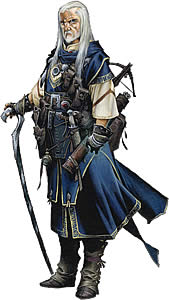

Más allá del velo de lo mundano se ocultan los secretos del poder absoluto. Las obras de seres más allá de los mortales, las leyendas de reinos donde caminan dioses y espíritus, el saber de las creaciones maravillosas y terribles, tales misterios llaman a aquellos con la ambición y el intelecto para alzarse por encima de la gente corriente para alcanzar el auténtico poder. Ese es el camino del mago. Estos hábiles usuarios de la magia buscan, coleccionan y codician saber esotérico, recurriendo a artes ocultas para crear maravillas más allá de las habilidades de los simples mortales. Mientras que algunos eligen un campo concreto de estudio mágico y se convierten en maestros de esos poderes, otros abrazan la versatilidad, deleitándose en las maravillas sin ataduras de toda la magia. En cualquier caso, los magos demuestran una ingeniosa y potente variedad de habilidades, capaces de castigar a sus enemigos, potenciar a sus aliados y dar forma al mundo a medida de sus deseos.
Papel: mientras los magos universalistas podrían estudiar para prepararse para cualquier tipo de peligro, los magos especialistas buscan escuelas de magia que les hagan especialmente calificados dentro de un enfoque específico. Sin embargo, sin importar su especialidad, todos los magos son maestros de lo imposible y pueden ayudar a sus aliados en la superación de cualquier peligro.
Alineamiento: cualquiera
Dado de Golpe: d6
Habilidades de clase: Artesanía (Int), Conocimiento de conjuros
(Int), Lingüística (Int), Profesión (Sab), Saber (todos) (Int), Tasación
(Int) y Volar (Des).
Rangos de habilidad por nivel: 2 + modificador de
Inteligencia.
Competencia con armas y armaduras: los magos son competentes con la clava, daga, ballesta ligera, ballesta pesada y bastón, pero no con ningún tipo de armadura o escudo. La armadura interfiere con los movimientos del mago, lo que puede hacer que sus conjuros con componentes somáticos fallen.
Conjuros: un mago lanza conjuros arcanos extraídos de la lista de conjuros de hechicero/mago. Un mago debe elegir y preparar sus conjuros por adelantado. Para aprender, preparar o lanzar un conjuro, el mago debe tener una puntuación de Inteligencia de al menos 10 + el nivel del conjuro. La Clase de Dificultad para una tirada de salvación contra el conjuro de un mago es 10 + el nivel del conjuro + el modificador de Inteligencia del mago.
Un mago sólo puede lanzar un cierto número de conjuros de cada nivel al día. Su selección diaria de conjuros se da en la tabla más abajo. Recibe conjuros adicionales diarios si posee una puntuación alta de Inteligencia. Un mago puede conocer cualquier cantidad de conjuros. Debe elegir y preparar sus conjuros por adelantado, tras dormir 8 horas e invirtiendo 1 hora estudiando su libro de conjuros. Mientras estudia, el mago decide qué conjuros preparar.
Idiomas adicionales: un mago puede sustituir uno de sus idiomas adicionales disponibles para el personaje debido a su raza por dracónico.
Vínculo arcano (Ex o St): a nivel 1, los magos forman un poderoso vínculo con un objeto o criatura. Este vínculo puede tener dos formas: un familiar o un objeto vinculado. Un familiar es una mascota mágica que mejora las habilidades y sentidos del mago y puede ayudarle con la magia, mientras que un objeto vinculado es un objeto que un mago puede usar para lanzar conjuros adicionales o para servirle como objeto mágico. una vez que un mago hace esta elección, es permanente y no puede cambiarse. Las reglas para familiares y objetos vinculados se dan más abajo.
Los magos que eligen un objeto vinculado comienzan el juego con uno sin ningún coste. Los objetos sujetos a un vínculo arcano deben estar incluidos en las siguientes categorías: amuleto, anillo, arma, bastón o varita. Estos objetos siempre son de gran calidad. Las armas conseguidas a nivel 1 no están hechas de ningún material especial. Si el objeto es un amuleto o anillo, debe llevarse puesto para tener efecto, mientras que los bastones, varitas y armas deben ser sostenidos con una mano. Si un mago intenta lanzar un conjuro sin su objeto vinculado puesto o en la mano, debe hacer una prueba de concentración o perder el conjuro. La CD para esta prueba es 20 + el nivel del conjuro. Si el objeto es un anillo o amuleto, ocupa el espacio del anillo o cuello apropiado.
Un objeto vinculado puede usarse una vez al día para lanzar cualquier conjuro que el mago tenga en su libro de conjuros y sea capaz de lanzar, incluso si el conjuro no ha sido preparado. Este conjuro se trata como cualquier otro conjuro lanzado por el mago, incluyendo tiempo de lanzamiento, duración y otros efectos dependientes del nivel del mago.
Este conjuro no puede modificarse con dotes metamágicas u otras aptitudes. El objeto vinculado no puede usarse para lanzar conjuros de la escuela opuesta del mago (ver escuela arcana). Un mago puede añadir aptitudes mágicas adicionales a su objeto vinculado como su tuviera las dotes de creación de objetos si cumple los requisitos para la dote. Por ejemplo, un mago con una daga vinculada debe ser al menos de nivel 5 para añadir aptitudes mágicas a la daga (ver la dote de Fabricar armas y armaduras mágicas). Si el objeto vinculado es una varita, pierde sus aptitudes de varita cuando se consume su última carga, pero no queda destruído y retiene sus propiedades de objeto vinculado y puede usarse para crear una nueva varita. Las propiedades mágicas de un objeto vinculado, incluida cualquier aptitud mágica añadida al objeto, sólo funcionan para el mago que lo posee. Si el propietario de un objeto vinculado muere o el objeto es reemplazado, ese objeto vuelve a convertirse en un objeto ordinario de gran calidad del tipo apropiado.
Si un objeto vinculado resulta dañado, sus puntos de golpe quedan totalmente restaurados la proóxima vez que el mago prepare sus conjuros. Si el objeto de un vínculo arcano se pierde o es destruido, puede reemplazarse después de 1 semana en un ritual especial que cuesta 200 mo por nivel de mago más el coste del objeto de gran calidad. El ritual requiere 8 horas para completarse. Los objetos reemplazados de esta forma no poseen ninguno de los encantamientos adicionales del objeto vinculado anterior. Un mago puede elegir un objeto mágico existente como objeto vinculado. Esto funciona de la misma forma que reemplazar un objeto perdido o destruido, excepto en que el nuevo objeto mágico retiene sus aptitudes al tiempo que obtiene los beneficios y desventajas de convertirse en un objeto vinculado.
Escuela arcana: un mago puede elegir especializarse en una escuela de magia, recibiendo conjuros adicionales y poderes basados en esa escuela. Esta elección debe hacerse a nivel 1 y una vez hecha, no puede cambiarse. Un mago que no seleccione una escuela, recibe la escuela universalista en su lugar.
Un mago que elija especializarse en una escuela de magia debe elegiro otras dos escuelas distintas como sus escuelas opuestas, representando el conocimiento sacrificado en un área de saber arcano para dominar otra área. Un mago que prepare conjuros de sus escuelas opuestas debe usar dos espacios de conjuro de ese nivel para preparar el conjuro. Por ejemplo, un mago con evocación como escuela opuesta, debe gastar dos de sus espacios de conjuro disponibles de nivel 3 para preparar una bola de fuego. Además, un especialista recibe un penalizador -4 en todas las pruebas de habilidad para crear objetos mágicos que tengan un conjuro de una de sus escuelas opuestas como requisito. Un mago universalista puede preparar conjuros de cualquier escuela sin restricción.
Cada escuela arcana le da al mago cierto número de poderes de escuela. Además, los magos especialistas reciben un espacio de conjuro adicional de cada nivel que pueda lanzar, desde el primero en adelante. Cada día, un mago puede preparar un conjuro de su escuela especializada en ese espacio. El conjuro debe estar en el libro de conjuros del mago. Un mago puede elegir un conjuro modificado por una dote metamágica para preparar en su espacio de escuela, pero utiliza un espacio de conjuro de nivel mayor. Los magos de la escuela universalista no reciben ningún espacio de conjuro de escuela.
Trucos: los magos pueden preparar un número de trucos, o conjuros de nivel 0, cada día como se indica en la tabla a continuación. Estos conjuros se lanzan como cualquier otro conjuro, pero no se gastan tras lanzarlos y pueden volver a usarse. Un mago puede preparar un truco de una escuela prohibida, pero utiliza dos de sus espacios disponibles (ver más abajo).
Inscribir pergamino: a nivel 1, un mago obtiene la dote Inscribir pergamino como dote adicional.
Dotes adicionales: a nivel 5º, 10º, 15º y 20º, un mago recibe una dote adicional. En ese momento, puede elegir una dote metamágica, de creación o Maestría en conjuros. El mago sigue neceitando cumplir todos los requisitos para la dote adicional, incluyendo el nivel mínimo de lanzador. Estas dotes adicionales se añaden a las dotes que un personaje de cualquier clase obtiene por avanzar niveles. El mago no está limitado a las categorías de dotes de creación de objetos, dotes metamágicas o Maestría en conjuros al elegir esas dotes.
Libros de conjuros: un mago debe estudiar su libro de conjuros cada día para preparar sus conjuros. No puede preparar ningún conjuro que no esté anotado en su libro de conjuros, excepto leer magia, que todos los magos pueden preparar de memoria.
Un mago comienza el juego con un libro de conjuros que contiene todos los conjuros de mago de nivel 0 (excepto aquellos pertenecientes a sus escuelas prohibidas, si hay alguno; ver Escuelas Arcanas) más tres conjuros de nivel 1 a su elección. El mago también elige una cantidad de conjuros adicionales de nivel 1 igual a su modificador de Inteligencia para añadirlos a su libro de conjuros. Cada nuevo nivel de mago, recibe dos nuevos conjuros de cualquier nivel de conjuro que pueda lanzar ( basándose en su nuevo nivel de mago) para su libro de conjuros.
En cualquier momento, un mago también puede añadir conjuros encontrados en los libros de otros magos a su propio libro.
La armadura restringe los complicados gestos que se necesitan al lanzar cualquier conjuro con un componente somático. Las descripciones de armaduras y escudos indican la posibilidad de fallo de conjuro arcano para distintas armaduras y escudos.
Si un conjuro no tiene componentes somáticos, un lanzador de conjuros arcanos puede lanzarlo sin posibilidad de fallo de conjuro arcano mientras lleve armadura. Esos conjuros pueden lanzarse incluso si el lanzador tiene las manos atadas o está apresado (aunque las pruebas de concentración siguen aplicándose normalmente). La dote metamágica Conjurar sin moverse permite a un lanzador de conjuros usar un conjuro sin el componente somático como si fuera de un nivel mayor de lo normal. Esto también proporciona una forma de lanzar un conjuro llevando armadura sin riesgo de fallo de conjuro arcano.
|
El Mago
|
|||||||||||||||
|
Nivel |
Ataque base
|
S. de Fort.
|
S. de Ref.
|
S. de Vol.
|
Especial
|
Conjuros diarios |
|||||||||
0 |
1 |
2 |
3 |
4 |
5 |
6 |
7 |
8 |
9 |
||||||
| 1 | +0 | +0 | +0 | +2 |
Vínculo arcano, escuela arcana, trucos, Inscribir pergamino |
3 | 1 | -- | -- | -- | -- | -- | -- | -- | -- |
| 2 | +1 | +0 | +0 | +3 | 4 | 2 | -- | -- | -- | -- | -- | -- | -- | -- | |
| 3 | +1 | +1 | +1 | +3 | 4 | 2 | 1 | -- | -- | -- | -- | -- | -- | -- | |
| 4 | +2 | +1 | +1 | +4 | 4 | 3 | 2 | -- | -- | -- | -- | -- | -- | -- | |
| 5 | +2 | +1 | +1 | +4 | Dote adicional | 4 | 3 | 2 | 1 | -- | -- | -- | -- | -- | -- |
| 6 | +3 | +2 | +2 | +5 | 4 | 3 | 3 | 2 | -- | -- | -- | -- | -- | -- | |
| 7 | +3 | +2 | +2 | +5 | 4 | 4 | 3 | 2 | 1 | -- | -- | -- | -- | -- | |
| 8 | +4 | +2 | +2 | +6 | 4 | 4 | 3 | 3 | 2 | -- | -- | -- | -- | -- | |
| 9 | +4 | +3 | +3 | +6 | 4 | 4 | 4 | 3 | 2 | 1 | -- | -- | -- | -- | |
| 10 | +5 | +3 | +3 | +7 | Dote adicional | 4 | 4 | 4 | 3 | 3 | 2 | -- | -- | -- | -- |
| 11 | +5 | +3 | +3 | +7 | 4 | 4 | 4 | 4 | 3 | 2 | 1 | -- | -- | -- | |
| 12 | +6/+1 | +4 | +4 | +8 | 4 | 4 | 4 | 4 | 3 | 3 | 2 | -- | -- | -- | |
| 13 | +6/+1 | +4 | +4 | +8 | 4 | 4 | 4 | 4 | 4 | 3 | 2 | 1 | -- | -- | |
| 14 | +7/+2 | +4 | +4 | +9 | 4 | 4 | 4 | 4 | 4 | 3 | 3 | 2 | -- | -- | |
| 15 | +7/+2 | +5 | +5 | +9 | Dote adicional | 4 | 4 | 4 | 4 | 4 | 4 | 3 | 2 | 1 | -- |
| 16 | +8/+3 | +5 | +5 | +10 | 4 | 4 | 4 | 4 | 4 | 4 | 3 | 3 | 2 | -- | |
| 17 | +8/+3 | +5 | +5 | +10 | 4 | 4 | 4 | 4 | 4 | 4 | 4 | 3 | 2 | 1 | |
| 18 | +9/+4 | +6 | +6 | +11 | 4 | 4 | 4 | 4 | 4 | 4 | 4 | 3 | 3 | 2 | |
| 19 | +9/+4 | +6 | +6 | +11 | 4 | 4 | 4 | 4 | 4 | 4 | 4 | 4 | 3 | 3 | |
| 20 | +10/+5 | +6 | +6 | +12 | Dote adicional | 4 | 4 | 4 | 4 | 4 | 4 | 4 | 4 | 4 | 4 |